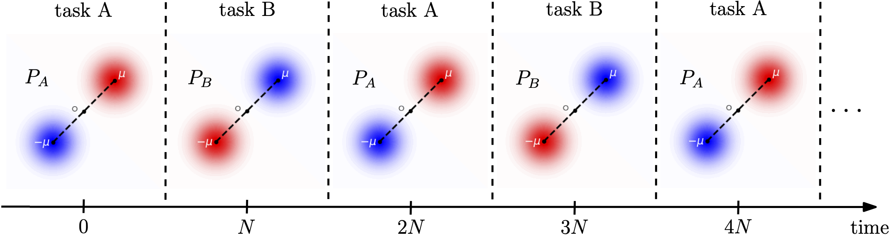
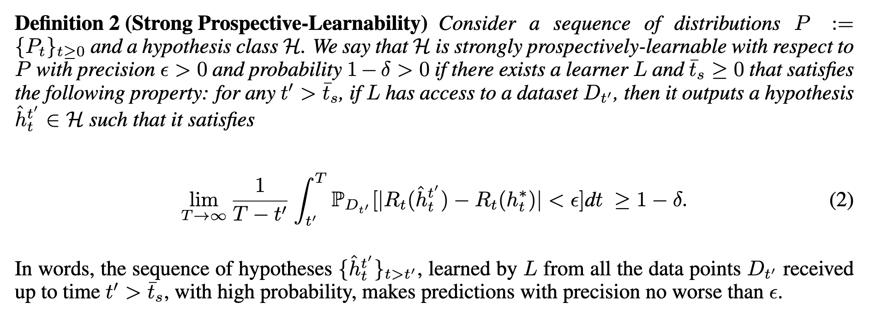
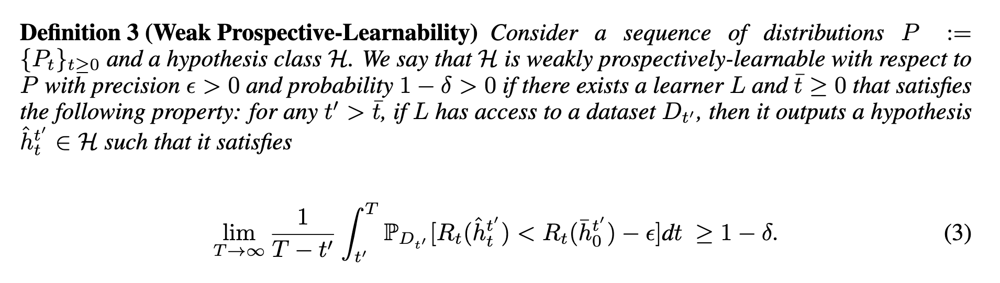

#### Probably approximately correct in the future<br> "Prospective Learning" <br><br> Joshua T. Vogelstein <br> <!-- , [JHU](https://www.jhu.edu/) <br> --> <!-- Co-PI: Vova Braverman, [JHU](https://www.jhu.edu/) <br> --> Ashwin de Silva, Rahul Ramesh, Pratik Chaudhari <!-- | Joshua T. Vogelstein <br> --> <!-- [Microsoft Research](https://www.microsoft.com/en-us/research/): Weiwei Yang | Jonathan Larson | Bryan Tower | Chris White --> <img src="images/neurodata_blue.png" width="20%" style="vertical-align: top; " > <!-- <img src="images/jhu.png" width="8%" style="vertical-align: top"> --> --- #### Outline --- #### Probably Almost Correct Learning -- - Nearly 100 years old -- - Work horse of modern AI revolution -- - Yet, the assumptions (IID) are wrong and dumb --- #### What the &*#*@ is learning? - Learning is an evolved property - It enabled organisms to make better decisions about how to act *in the future* based on the past - This works because the future was (at least) partially predictable - What we call "learning" in AI is a formal model of a natural phenomenon - But, it is not actually "learning" as observed in the world --- #### Can we do any better? - We start from a different assumption - Data model: random process, not random variable - Goal model: dynamic objective, not fixed objective - This more complicated model reduces bias and adds variance - Let's formalize it --- #### Data model - $z_t = (x_t, y_t) \in \mathcal{X} \times \mathcal{Y}$ - $z = (z\_t)\_{t \in \mathbb{N}}$ is a realization of a stochastic process $Z = (Z\_t)\_{t \in \mathbb{N}}$ - let $z\_{\leq t}$ denote the past and $z\_{>t}$ denote the future --- #### Hypothesis class - a hypothesis sequence $h=(h\_t)\_{t \in \mathbb{N}}$ - $h\_t \in \mathcal{Y}^{\mathcal{X}}$ - $h \in \mathcal{H} \subset (\mathcal{Y}^{\mathcal{X}})^{\mathbb{N}}$ --- #### Learner - Map from data history to hypothesis sequence: $$z_{\leq t} \mapsto h$$ --- #### Prospective loss, Risk, and expected Risk - Prospective loss: $$ \bar \ell(h, Z) = \limsup\_{\tau \to \infty} \frac{1}{\tau} \sum\_{s=1}^{\tau} \ell (s, h\_s(X\_s), Y\_s) $$ where $\ell: \mathbb{N} \times \mathcal{Y} \times \mathcal{Y} \mapsto [0,1]$ is a bounded, monotonically decaying (in time) loss function. - Prospective risk at time $t$ is, for example, expected prospective loss $$R\_t(h) = \mathbb{E} [\bar \ell(h,Z) \mid z\_{\leq t}] = \int \bar \ell(h,Z) \mathrm{d}{\mathbb{P}\_{Z \mid z\_{\leq t}}},$$ - Expected prospective risk at time $t$ integrates out the history $$\mathbb{E} [R\_t(h)] = \int R\_t(h) \mathrm{d}{\mathbb{P}\_{Z\_{\leq t}}}$$ --- #### Prospective Bayes risk A hypothesis sequence that achieves the minimal possible prospective risk, given the past, as a Bayes optimal hypothesis: $$ R\_t^* = \inf\_{h\in \sigma(Z\_{\leq t})} R\_t(h) $$ A Bayes optimal learner selects a Bayes optimal hypothesis sequence at every time $t$. --- #### Components of a Prospective Learning problem - Data: $z = (z\_t)\_{t \in \mathbb{N}}$ is a realization of a stochastic process $Z = (Z\_t)\_{t \in \mathbb{N}}$ - Hypothesis sequence $h=(h\_t)\_{t \in \mathbb{N}} \in \mathcal{H} \subset (\mathcal{Y}^{\mathcal{X}})^{\mathbb{N}}$, where $h\_t \in \mathcal{Y}^{\mathcal{X}}$ - Learner: $z_{\leq t} \mapsto h$ - Prospective loss: $ \bar \ell(h, Z) = \limsup\_{\tau \to \infty} \frac{1}{\tau} \sum\_{s=1}^{\tau} \ell (s, h\_s(X\_s), Y\_s) $ - Prospective risk: $R\_t(h) = \mathbb{E} [\bar \ell(h,Z) \mid z\_{\leq t}] = \int \bar \ell(h,Z) \mathrm{d}{\mathbb{P}\_{Z \mid z\_{\leq t}}},$ - Expected prospective risk: $\mathbb{E} [R\_t(h)] = \int R\_t(h) \mathrm{d}{\mathbb{P}\_{Z\_{\leq t}}}$ --- #### Consider the following sequence  -- Has anyone ever run an experiment? --- #### Online SGD & FTL Fail <img src="images/online_seq1.png" width="640"> -- - Online Meta & Continual would do better, but never get to zero error - Because none of these frameworks *prospect* --- #### Formalizing prospection - $\mathcal{H}$ is a set of feasible hypotheses - $t \in \mathcal{T}$ indexes time - $P :=$ { $P\_t$ }$\_{t \geq 0}$ be a sequence of distributions - $D\_{t'} =$ { $z\_t$ }$\_{t < t'}$ be a dataset drawn from $P$ such that $z\_t \sim P\_t$, - $\mathcal{D}$ be the set of all possible datasets A prospective learner $L: \mathcal{D} \times \mathcal{T} \mapsto \mathcal{H}$, so <br> $L(D\_{t'}, t) = \hat{h}\_t^{t'}$, where $\hat{h}\_t^{t'}$ is the hypothesis at time $t > t'$ trained on data up until time $t'$ --- #### Formalizing prospection - $\ell_t : \mathcal{H} \times \mathcal{Z} \mapsto \mathbb{R}$ is a time-varying loss function. - Risk at time $t$ be the expected loss, $ R\_t(L(D\_{t'},t)) = \mathbb{E}\_{z \sim P\_t}\left[ \ell\_t (L(D\_{t'},t) , z) \right]$ <!-- = \mathbb{E}\_{z \sim P\_t} [ \ell\_t ( \hat{h}^{t'}\_t , z) ]$. --> Colloquially, we desire that the expected risk decreases as $t$ increases --- #### Strong Prospective Learnability  Key differences with Strong PAC Learning: - we care about risk integrated over the future - this requires prospecting about (1) what the future will be like, and (2) what we will be like --- #### Weak Prospective Learnability  where $L\_{ERM} : \mathcal{D} \mapsto \mathcal{H}$ be the ERM learner, so $\bar{h}\_0^{t'} = L\_{ERM}(D\_{t'})$. Key additional differences with Weak PAC Learning: - we compare to an ERM learner, meaning it does not include time --- #### Continuum Hypothesis of Learning Hypotheses - Let $P$ is a sequence of distributions, - Let $\mathcal{H}$ is the set of all possible relevant hypotheses. We conjecture that there are multiple classes of learning difficulty 1. P is PAC Learnable 2. P is weakly prospectively learnable (ie, we can do better than ERM) 3. P is strongly prospectively learnable (for some $\epsilon$) 4. P is uniformly prospectively learnable (for all $\epsilon$) 5. P is not prospectively learnable --- #### Did we re-invent the wheel? How is reinforcement learning different from this? - We directly build on statistical decision theory - RL theory assumes POMDP on dynamics, not PL - Vanilla RL focuses on a single task, not PL - RL focuses on inference problem, learning the parameters is a necessary sub-task, PL focuses on the learning problem - RL algorithms require many trials, we care about zero-shot learning --- #### Zooming out - How do we design truly intelligent systems? - How do we solve the AI alignment issue? --- #### Publications 1. De Silva et al. [The Value of Out-of-Distribution Data](https://arxiv.org/abs/2109.14501), ICML, 2023. 1. De Silva et al. [Prospective Learning: Princpled Extrapolation to the Future](https://arxiv.org/abs/2004.12908), CoLLAs, 2023. --- ##### Acknowledgements <img src="images/neurodata2023.jpg" width="640"> .small[NSF Simons MoDL, ONR N00014-22-1-2255, and NSF CCF 2212519] --- ##### Questions? <img src="images/dino_yummies.jpg" width="640">